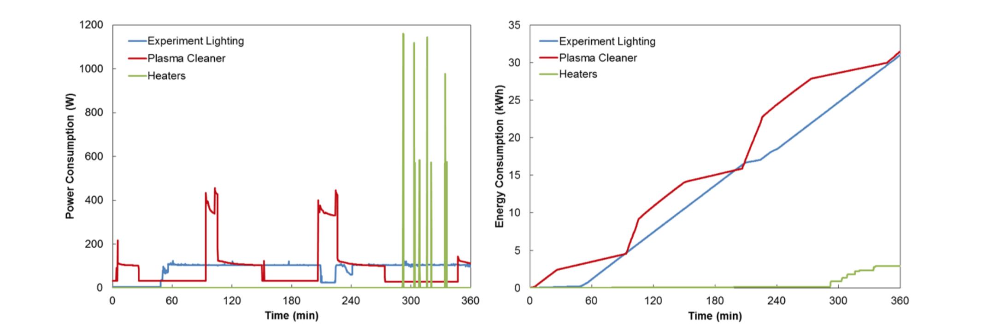

We've launched our program by running some data collection in our own lab.
Data logging during a typical experiment in the lab that consisted of lighting to visualize a sample (blue), plasma cleaning the sample (red), and heating the sample (green). The plot on the left shows the instantaneous power consumption during the experiment over time, and the plot on the right shows the cumulative energy consumption.
This particular case was useful because it illustrated that leaving the light on during the whole experiment even though it only needed to be on when visualizing the sample (about 5% of the total time) was consuming nearly half of the total energy used.
Turning off the lighting when not in use therefore reduced the energy consumption of this experimental procedure by approx. 50%.
Breakdown of power consumption:
| Lab Equipment | Power Consumption(W) |
|---|---|
| Unlighted Power Strip | 0.0 |
| LED Lighted Power Strip | 0.2 |
| Wemo Power Monitor | 1.3 |
| Desktop Computer Tower | 104.8 |
| Desktop Monitor | 13.2 |
| Laptop Computer | 12.6 |
| Lab Task Light: Low | 26.6 |
| Lab Task Light: Medium | 34.6 |
| Lab Task Light: High | 39.7 |
| Optical Microscope Light | 59.9 |
| Heat Gun: Low | 575.0 |
| Heat Gun:High | 1152 |
| Vacuum Pump: Startup | 506.1 |
| Vacuum Pump: Steady State | 402.7 |
| Hot Plate: Startup | 1021 |
| Hot Plate: Steady 150 C | 202.7 |
| Hot Plate: Steady 300 C | 317.1 |
| Ultrasonicator | 25.6 |
| Plasma Cleaner: Standby | 3.2 |
| Plasma Cleaner: Operation | 365.9 |
This table was generated by using the Wemo outlets to record power consumption data to compile typical energy usage for lab equipment for labmates to refer to when designing experiments
An interesting conclusion we can draw from this data is that a LED lighted power strip consumes 0.2 W of power, while an unlighted power strip consumes essentially no power. Future purchases of power strips should be made with this in mind to avoid waste.